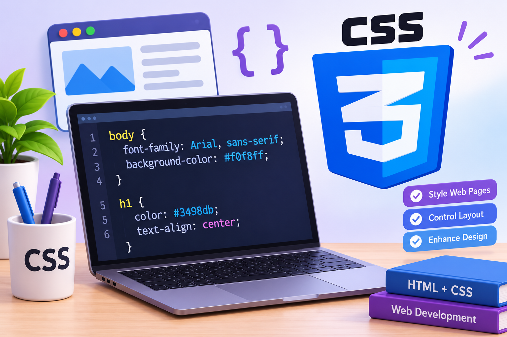

اسم الطالب:منه خالد ابوهاشم
عزب عطيه الرفاعيالرقم الجامعي :2502957
هي لغه تصميم تستخدم لتحديد مظهر صفحات الويب وأسلوب تنسيقها وتتحكم في كل ما يتعلق بالرؤيه البصرية للموقع وتعد ايضا لغه CSS من اللغات التي تساعد علي تحسين شكل الصفحه وتنسيق النصوص والألوان والخطوط حيث يجعل الموقع أكثر جاذبيه وسهولة في االستخدام وهي اختصار ل cas
.1 تحسين مظهر صفحات الويب .2 التوافق مع األاجهزة المختلفة .3 توفير الوقت والجهد .4 تنظيم عناصر الصفحه .5 تغيير الألوان و الخطوط .6 جذب انتباه المستخدم .7 تحسين تجربه المستخدم .8 سهوله تعديل التصميم
تغيير األالوان في صفحات الويب : .1 Color: لتغيير لون النصوص والعناوين .2 Background -color: لتغيير لون خلفيه الصفخه او اي صندوق أو زر .3 Border-color لتغيير ألوان الحدود والاطارات المحطيه بالعناصر : .2 تغيير الخطوط في صفحات الويب : تستخدم لغه CSS للتحكم في نوع الخط وحجمه ولونه وسمكه مع إضافة المسافات بين الحروف والكلمات لجذب انتباه المستخدم ـ واهميه تغيير الخطوط : .1 : تحسين المظهر تجعل الخطوط مناسبه لتصميم موقع اكثر احترافيه. .2 : سهوله القراءة تساعد الخطوط الواضحه والأحجام المناسبة علي قراءه النص بسهولة .3 : جذب الانتباه استخدام الخطوط العريضه للعناويين المهمه لتميزها عن باقي النصوص .4 : تحسين تجربة المستخدم يساعد تنسيق الخطوط بشكل صحيح علي فتح الموقع وفهم محتواه ـ كيفيه تغيير الخطوط باستخدام CSS : ٠1 لتحديد نوع الخط : font-family ٠2 لتحديد حجم الخط : font-size ٠3 لتحديد سمك الخط : font-weight ٠3 لتحديد لون النص : color ٠4 لتحديد المسافة بين االسطر : line -height مثال:مرحبا بكم class="welcome"
P ; Font-family: Arial, sans-serifFont-size: 18px ; Font-weight: bold ; Color: blueلغه _ CSSفي تصميم صفحات الويب : .1 تغيير الألوان النصوص و الخلفيات .2 تحديد نوع الخط وحجمه وشكله .3 تنظيم العناصر وترتيبها داخل الصفحه .4 تصميم صفحات متوافقة مع الهواتف وأجهزة الكمبيوتر .5 تحسين المظهر العام للموقع وجذب انتباه المستخدم
مميزات لغه (css) .1 سهوله تعديل التصميم صفحات الويب .2 امكانيه استخدام ملف css واحد لتنسيق عدة صفحات .3 توفير الوقت والجهد في تصميم المواقع .4 تحسين تجربة المستخدم من خلال تنظيم المحتوي وتنسيقه

| العنصر | التعريف | الاستخدام |
|---|---|---|
| CSS | لغة تنسيق صفحات الويب | تغيير شكل الصفحة |
| Color | خاصية اللون | تغيير لون النص |
| Background | خاصية الخلفية | تغيير لون الخلفية |
| Font-size | حجم الخط | تغيير حجم الكتابة |
| Text-align | محاذاة النص | توسيط النص |